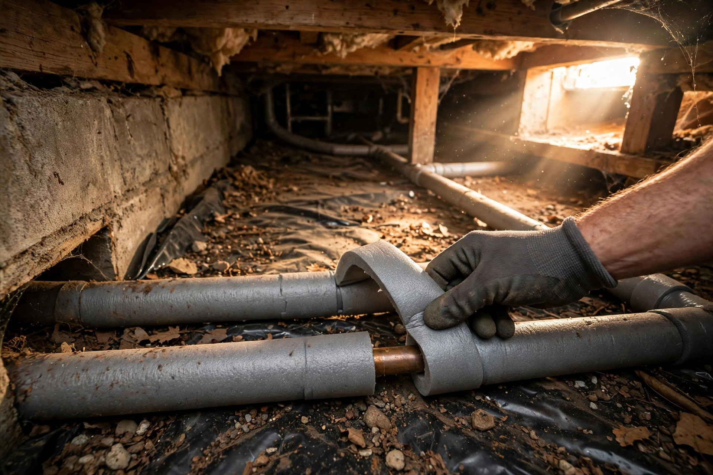

Preventing Frozen Pipes: Your October Before-the-Freeze Checklist

A burst pipe is one of the most expensive things winter can do to a house. The Insurance Institute for Business and Home Safety calls burst pipes the leading cause of property damage from winter weather; State Farm handled more than 20,000 winter-water damage claims from 2024 through mid-2025, paying out over $628 million, with the average claim payment topping $30,000. The Michigan Committee for Severe Weather Awareness estimates a quarter-million homes are damaged by frozen water pipes each winter. The good news: almost all of it is preventable, and October is when to do the work — not during the first deep freeze.
Rank your risk: which pipes freeze first
Not all pipe runs are equal. Walk your house and rank them from riskiest to safest, then work the list top-down:
- Outdoor lines first: hose bibs, sprinkler and irrigation lines, pool supply lines. Trapped water here freezes fastest and it's the easiest fix in the book.
- Pipes in unheated spaces: crawl spaces, attics, and garages. Crawl spaces are the classic culprit — cold air flows right through many of them — and north-facing exterior walls are next.
- Pipes on exterior walls: kitchen and bathroom sinks on outside walls, where only a few inches of framing stand between the pipe and the cold.
- Pipes near air leaks: any run that passes where cold air gets in — around wiring penetrations, dryer vents, and gaps where pipes enter the house.
One more factor: pipe material matters. Copper lines freeze faster than PEX, which has more freeze resistance. And know your threshold — water can start freezing inside pipes below 32°F, but the real danger zone is 20°F and lower, where pipes can freeze in under six hours.
The before-the-freeze checklist, in order
Work your risk list top-down with these, in this order:
- Disconnect and drain outdoor lines. Remove garden hoses, then use the indoor shut-off valve for each outdoor faucet and drain the short pipe span just inside the house. Water left in exterior lines is the most likely candidate to freeze in the whole house.
- Insulate the worst runs. Foam pipe insulation costs about a dollar a foot at any hardware store and takes minutes to install on straight runs in crawl spaces, attics, and garages. For awkward runs, wraps or fitted insulation work better.
- Seal the cold-air leaks near pipes. Insulation alone can't fight a draft: seal gaps around pipes where they enter the house, plus leaks around wiring and dryer vents, with caulk or insulation. Even a tiny opening can let in enough cold air to freeze a pipe in a serious wind chill.
- Service the heating system. A furnace failure during a cold snap can freeze pipes throughout the house. October maintenance beats a January emergency call.
- Add heat cable where it counts. For runs that stay vulnerable, thermostatically controlled heat cables wrapped around the pipe help — but use only products approved by an independent testing body like Underwriters Laboratories, only for their intended use, and follow the manufacturer's installation instructions exactly.
Locate and test your shut-off valve now
If a pipe bursts, every minute matters: even an eighth-inch crack can leak up to 250 gallons of water a day. Find your valve before you need it:
- Find it. Look where the water service enters the house — that's where the main shut-off valve lives.
- Test it. Turn it off, then open a faucet and confirm the water stops. If the valve is stiff or won't fully close, note it now — a plumber can service it before winter.
- Show everyone. Make sure every adult in the house knows where it is and can turn it. Tape a bright tag on it so it's findable in a panic.
What success looks like: you can walk a housemate to the valve, they can close it without tools or force, and a test confirms the water stops. If it takes a wrench or won't budge, it fails the test.
When the cold snap hits
Prevention work done, the deep-freeze routine is simple: let faucets served by vulnerable pipes drip — even a trickle relieves pressure and keeps water moving. Open cabinet doors under sinks on exterior walls so warm room air reaches the pipes. Keep the thermostat steady, at least 55°F, even when you're away — dropping it lower to save a few dollars can cost thousands. Close garage doors if water lines run through the garage.